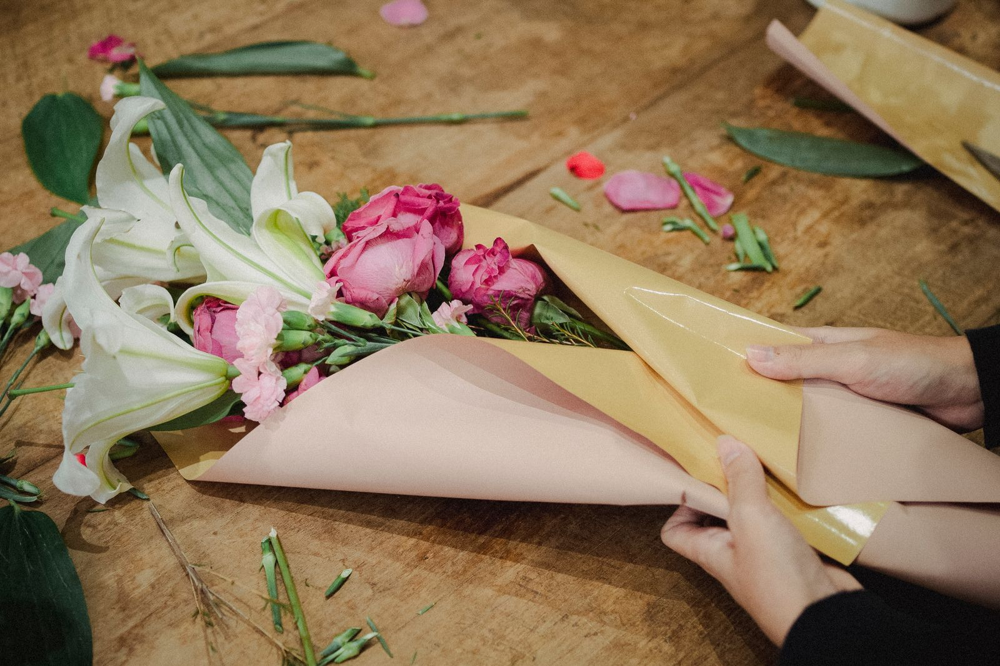
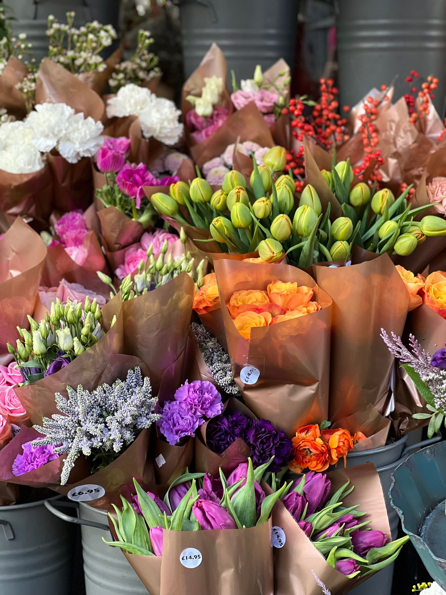
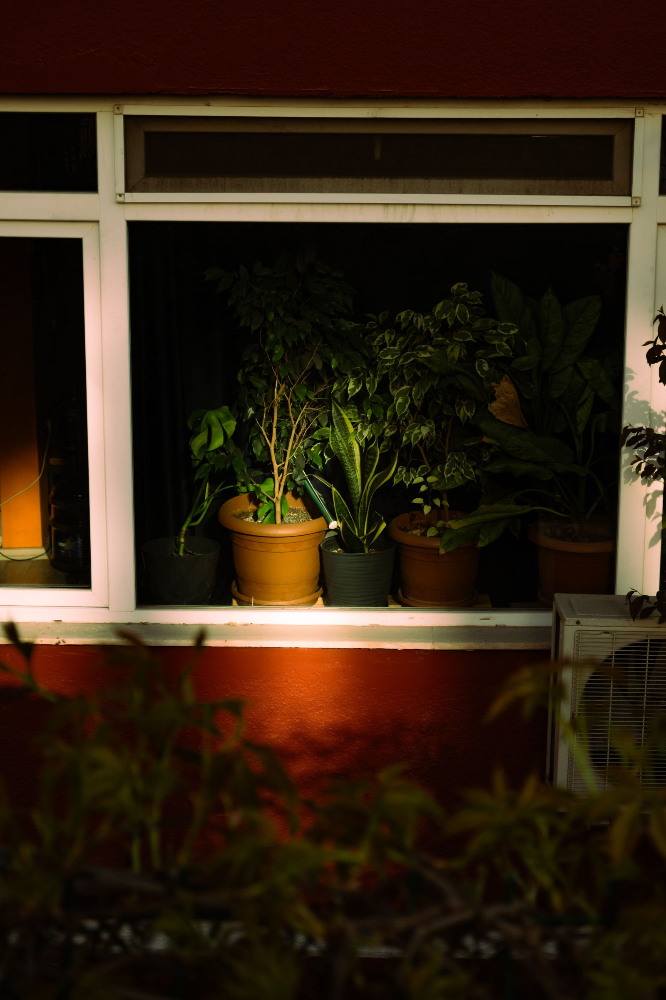
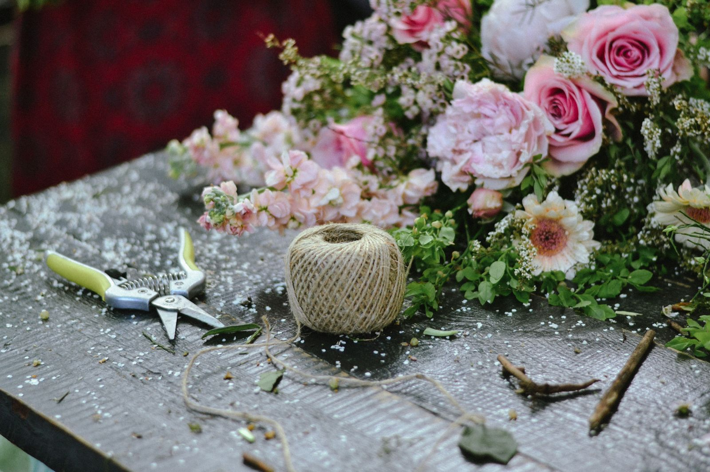
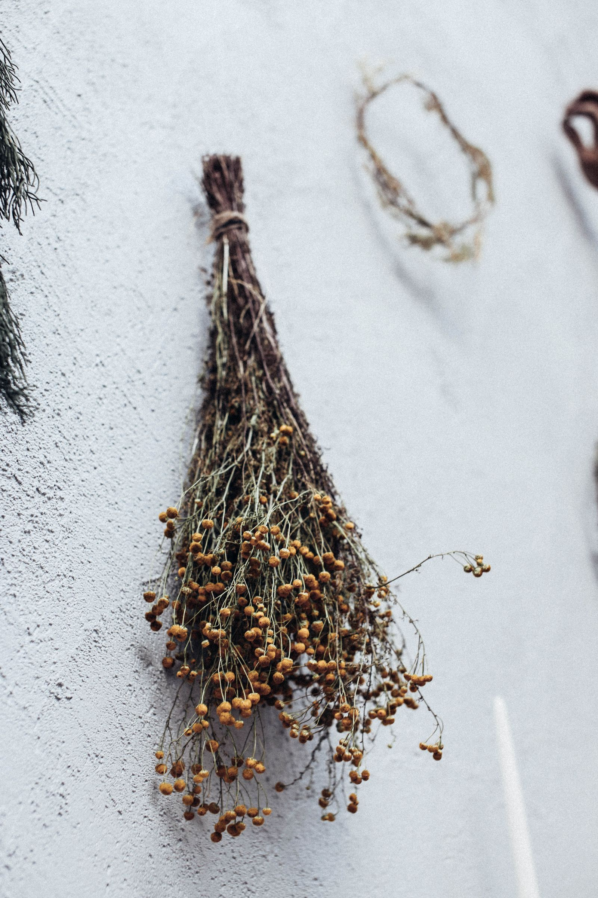
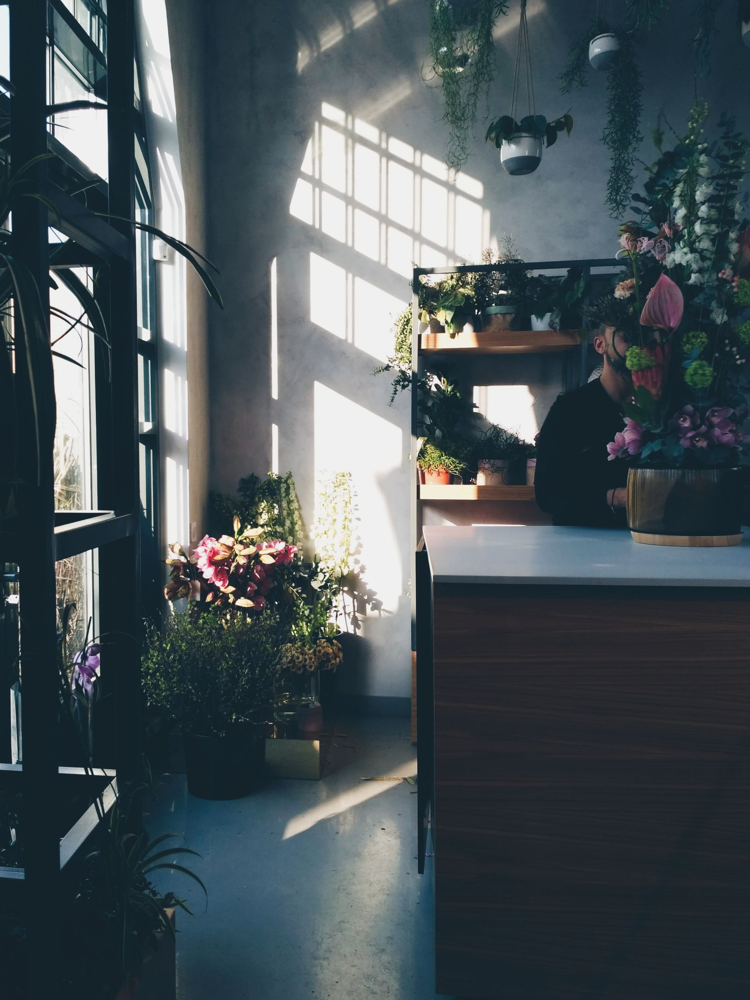

Cumpleaños
Color y descaro. Se envuelve en papel de estraza con lazo de algodón y tarjeta escrita a mano.
desde 22 €
Floristería de barrio · Betanzos, A Coruña · desde 2014
Aquí no hay ramos hechos esperando en la nevera. Nos dices para quién es, miramos juntos el cubo y lo montamos en el mostrador mientras charlamos.

01 El cubo
Compramos dos veces por semana, martes y viernes. Lo que no está en el cubo no se puede inventar: si quieres algo concreto, encárgalo con tres días.
Semana en curso
Roja, coral o blanca. La de siempre, y por algo.
3,20 € / tallo
De octubre a mayo. Abre en casa durante cuatro días.
2,80 € / tallo
Sigue creciendo dentro del jarrón. Agua poca y fría.
1,90 € / tallo
El más duro del cubo: quince días si le cambias el agua.
1,40 € / tallo
Se vende por manojo. Seca bien colgada boca abajo.
5,00 € / manojo
Verde de base para casi todo. Huele a mesa recién puesta.
2,20 € / rama
Seco de temporada. Aguanta el invierno entero.
1,60 € / tallo
Lo cortamos nosotros en la finca de Requián.
1,20 € / rama
La selección cambia cada semana. Precios de muestra para esta demostración.
0 tallos en la mano
02 Cómo se monta
Eucalipto y helecho abren la mano y dan la forma. Sin base verde, el ramo se cae hacia dentro.
Dos o tres flores grandes, nunca cuatro. Van a distinta altura: una mira de frente y las otras se esconden un poco.
Paniculata y espiga para rellenar los huecos y que el ramo respire. Aquí se decide si sale alegre o serio.
Todo gira en espiral y se ata en un punto, el que la mano hace solo. Después se cortan los tallos a la vez, en bisel.
Papel de estraza, lazo de algodón y una etiqueta escrita a mano. El agua va en una bolsita, para que aguante el viaje.
Esto es lo que pasa en el mostrador mientras esperas. Si tienes prisa, avisa y salimos antes.
03 Ocasiones
Color y descaro. Se envuelve en papel de estraza con lazo de algodón y tarjeta escrita a mano.
desde 22 €
Rosa de tallo largo, ranúnculo y algo de verde. Si nos dices el número de años, jugamos con él.
desde 35 €
Ramos pequeños y claros, o una planta que aguante los primeros meses sin que nadie la mire.
desde 28 €
Cuatro bodas al año, ni una más. Cita previa, prueba de ramo dos meses antes y montaje el mismo día, con presupuesto cerrado por escrito.
presupuesto a medida
Centros, coronas y ramos discretos. Llevamos al tanatorio de Betanzos en una hora y llamamos antes para confirmar la sala.
desde 90 €
Cambio semanal de jarrones. Vamos los martes por la mañana, retiramos lo viejo y dejamos lo nuevo puesto.
desde 45 € / mes

04 Plantas de interior
No vendemos nada que no tengamos en casa. De cada planta te decimos cuánta luz quiere, cada cuánto se riega y lo que perdona un despiste. La maceta de barro va incluida; el plato, aparte.
| Planta | Luz | Riego | Perdona | Precio |
|---|---|---|---|---|
| Potos | Media, sin sol directo | Cada 7 días | Casi todo | 12 € |
| Sansevieria | Baja | Cada 20 días | El olvido | 18 € |
| Monstera | Alta indirecta | Cada 7 días | Regular | 32 € |
| Calathea | Media | Cada 4 días y humedad | Poco | 24 € |
| Ficus lyrata | Alta indirecta | Cada 8 días | Nada de corrientes | 45 € |
Trasplante gratis el primer año si la compraste aquí: trae la planta y la maceta nueva.

05 Talleres
17 octsábado, 11:00
Base de mimbre, hojas secas, espiga y frutos. Dura hasta Navidad colgada en la puerta.
12 plazas35 €
14 novsábado, 11:00
La espiral en la mano, paso a paso, hasta que sale sin pensarla. Te llevas el ramo puesto.
10 plazas38 €
12 dicsábado, 11:00 y 17:00
Con vela, piña y ramas de la finca. Dos turnos, porque este se llena solo.
12 plazas42 €
Plazas por orden de reserva, con el pago por adelantado. Material incluido y café de media mañana. Si no puedes venir, avisa con 48 horas y te guardamos la plaza para el siguiente.

06 Cómo encargar
Reparto gratis en toda la zona a partir de 45 €. Fuera de esas parroquias, pregúntanos: a veces cuadra con otro reparto.

07 La tienda
Comprobando el horario…
| Lunes | Cerrado |
|---|---|
| Martes | 9:30 – 13:30 · 17:00 – 20:00 |
| Miércoles | 9:30 – 13:30 · 17:00 – 20:00 |
| Jueves | 9:30 – 13:30 · 17:00 – 20:00 |
| Viernes | 9:30 – 13:30 · 17:00 – 20:00 |
| Sábado | 9:30 – 14:30 |
| Domingo | Cerrado |
Notas de muestra, escritas para esta demostración. No proceden de ninguna plataforma ni de ninguna clienta real.
«Pedí algo para una disculpa y me hicieron un ramo que hablaba por mí.»
«Llegaron al tanatorio antes que yo y con la tarjeta escrita a mano. Eso no se paga.»
